Capítulo 1: Preparando o Terreno
O Dashboard não guarda dados permanentemente. Sempre que você o abrir, o primeiro passo será "alimentá-lo" com as planilhas do Benner/Planejamento.
Como inserir os dados (fluxo recomendado):
- Abra o Dashboard (atalho
🚀_ABRIR_DASHBOARD.html) no Chrome ou Edge. - No canto superior direito, clique em "📂 Importar Pasta de Bases".
- Selecione a pasta
_Bases_para_Uploadinteira e confirme.
O sistema identifica sozinho o que é o quê pelas subpastas: Faturamento
(arquivos base_AAAA.CSV — o ano vem do nome do arquivo), Metas,
OrdemVendas e, se existir, um setor.csv com a classificação
setorial. Tudo é carregado de uma vez, na ordem correta.
Ctrl para múltiplos anos).
Capítulo 2: A Arte dos Filtros
A lateral esquerda é o "Controle Remoto" do seu dashboard. Tudo o que você seleciona aqui reflete instantaneamente em todos os gráficos.
- Tempo: Filtre por ano ou meses específicos para analisar sazonalidades.
- Centro de Custo: Isole departamentos específicos ou veja a visão consolidada.
- Tipo de Operação: Separe Serviços de Produtos (a classificação de cada família pode ser auditada na aba Configurações).
- UF (Estado): Filtre por regiões geográficas.
- Busca de Clientes: Use para localizar um cliente específico ou desmarcar "outliers".
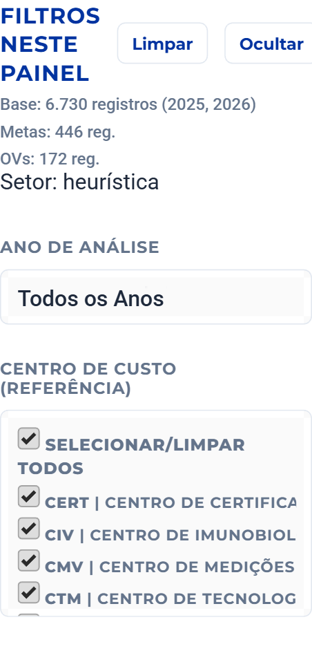
Filtros de Tempo e Centro de Custo
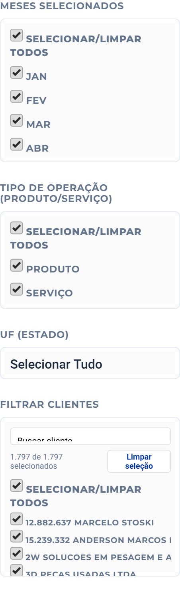
Filtros de Meses, Tipo de Operação, UF e Clientes
Capítulo 3: Aba Faturamento
Visão macro da performance financeira vs. metas. Esta é a tela principal para acompanhamento de resultados.
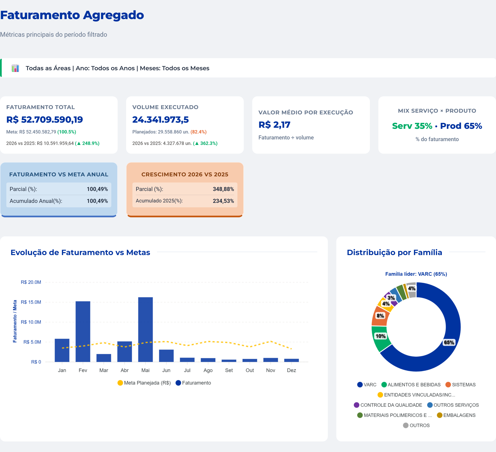
KPIs Principais e Gráfico de Metas
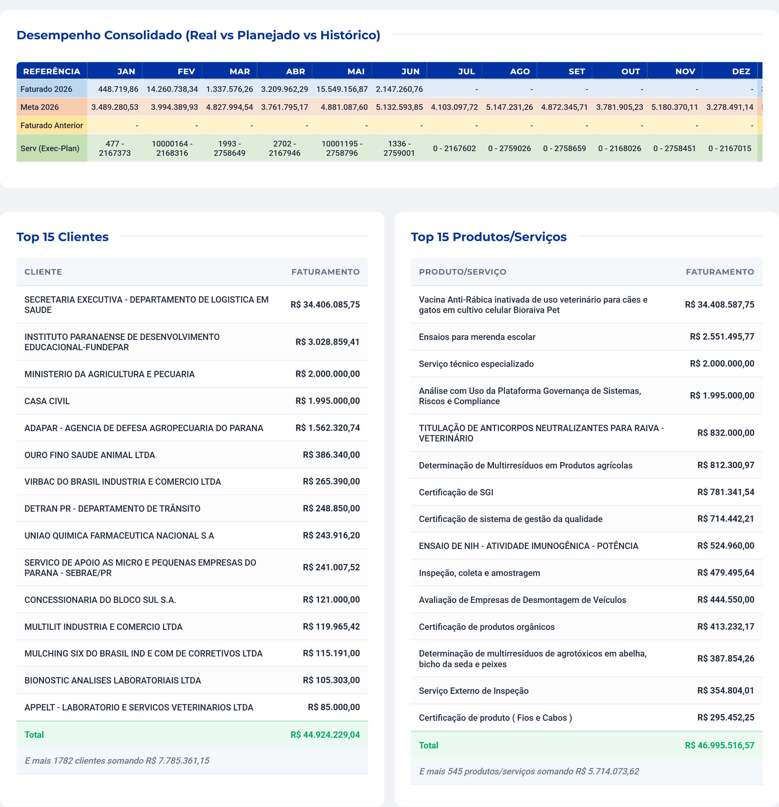
Matriz de Faturamento e Rankings Top 15
- KPIs: Faturamento, Quantidade e Ticket Médio em destaque.
- YoY: Comparação automática com o mesmo período do ano anterior.
- Top 15: Rankings detalhados de clientes e serviços.
Capítulo 4: Inteligência de Clientes
Esta aba permite mergulhar no perfil dos seus clientes, identificando não apenas quem eles são, mas como e onde consomem os serviços do Tecpar.
1. Análise de Concentração (Curva ABC)
Através do detalhamento dos Top 15 clientes, você visualiza a fatia da base que realmente sustenta o faturamento.
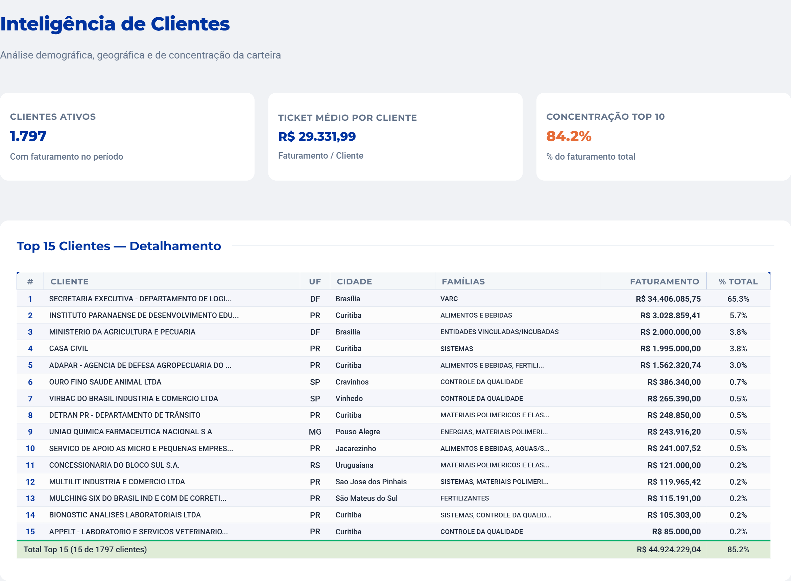
2. Perfil de Consumo e Frequência
Os gráficos mostram a saúde da sua base: quais famílias de produtos são as "estrelas" e a atividade mensal.
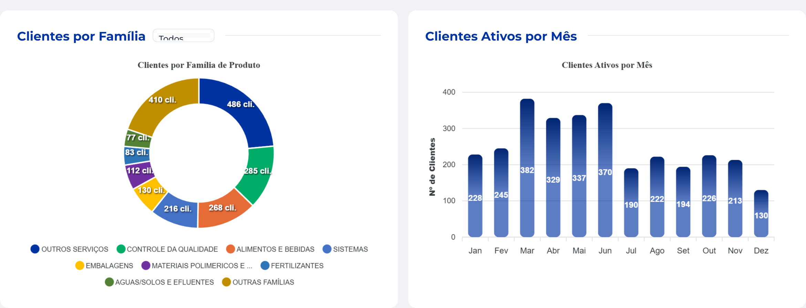
3. Matriz de Cross-Selling
Esta é a ferramenta de ouro para expansão. O mapa de calor mostra estados onde o Tecpar já é forte e onde há oportunidades.
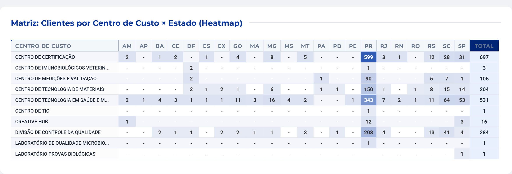
Capítulo 5: Aba Fidelidade
A fidelização é o coração do crescimento sustentável. Esta aba permite monitorar a retenção da sua carteira.
1. Indicadores e Curva de Sobrevivência
Define-se o Ano-Base e o sistema mostra quantos clientes foram retidos nos anos seguintes.
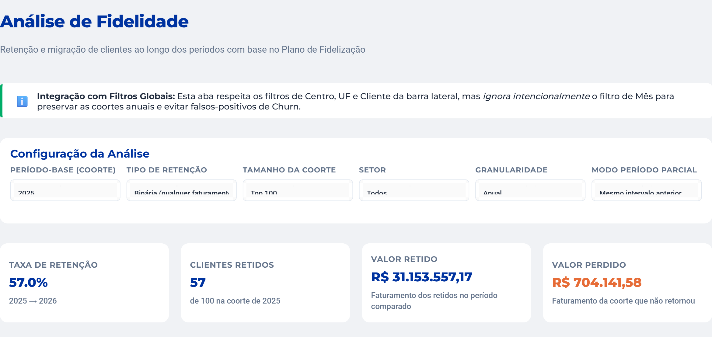
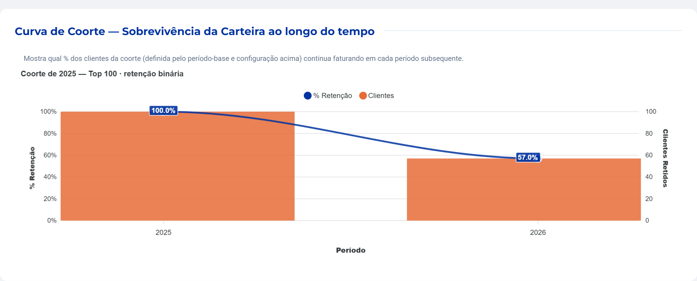
2. Matriz de Migração e Listas de Ação
Gera as listas que o time comercial deve usar: resgate de perdidos e foco nos novos campeões.
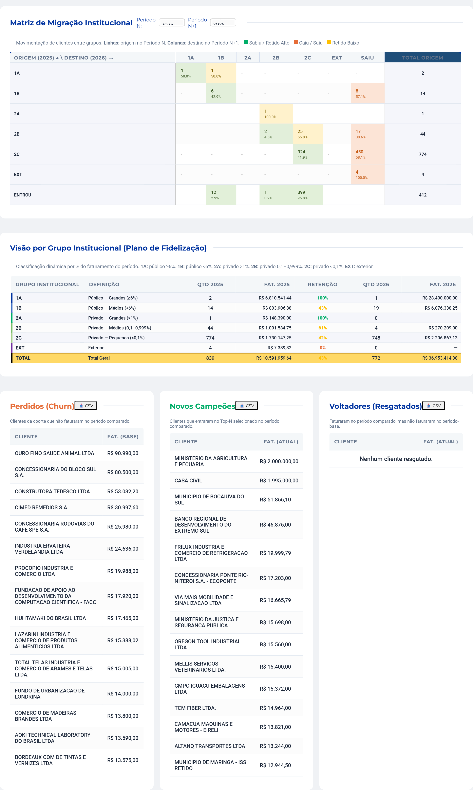
Capítulo 6: Aba Relatório
Transforma a visão atual do painel em documentos prontos para distribuição — sempre respeitando os filtros ativos na barra lateral (Ano, Centro, Meses...).
1. Relatório Estratégico (blocos)
Marque os blocos desejados (KPIs, gráfico de famílias, Top 15, mapa do Brasil...), clique em "🔍 Pré-visualizar" para conferir e em "📄 Baixar PDF" para gerar o arquivo.
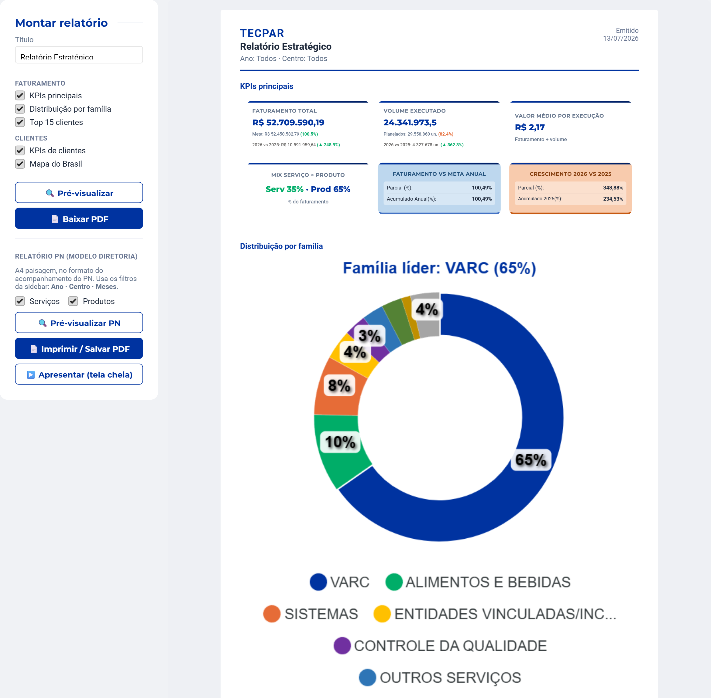
2. Relatório PN (modelo diretoria)
Réplica em PDF (A4 paisagem) do relatório de acompanhamento do PN: capa com destaques, tabelas consolidadas de Serviços/Produtos com velocímetros de meta, gráficos por centro, Top 15 e páginas de detalhe por centro (famílias e Ordens de Venda).
- As caixas Serviços/Produtos controlam quais seções entram no PDF.
- Em "📝 Capa: destaques e contrato" você edita os textos da capa e os dados do contrato de vacinas — eles ficam salvos no navegador para reuso mensal.
- "▶️ Apresentar (tela cheia)" exibe as páginas como slides
(setas/clique para navegar,
Escpara sair) — ideal para reuniões.
Capítulo 7: Configurações e Revisão
O algoritmo classifica automaticamente, mas você tem o controle final para auditar os dados. A aba reúne duas revisões:
1. Classificação de Famílias (Serviços × Produtos)
Define se cada família conta como Serviço ou Produto nos painéis e no filtro "Tipo de Operação". O padrão automático classifica o CVI como Produto e os demais centros como Serviço; use o seletor da linha para forçar manualmente (a linha fica marcada como MANUAL).
2. Revisão Setorial (Público × Privado)
Auditoria da classificação de clientes usada na aba Fidelidade e nas análises por setor.
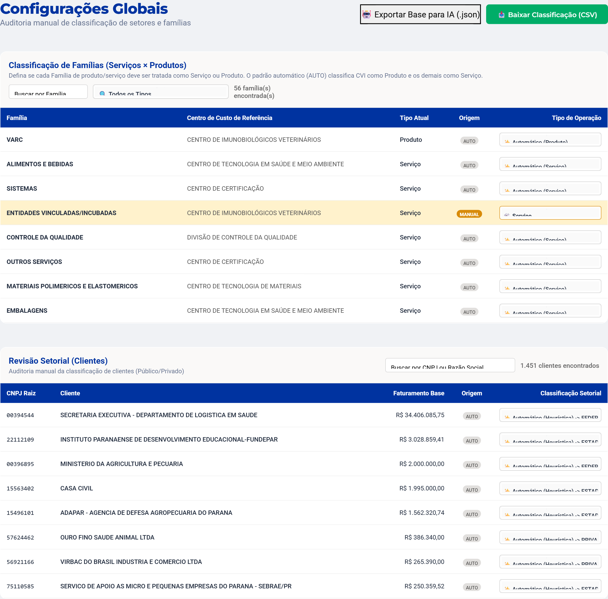
Se notar uma classificação errada, troque para manual. Clique em "Baixar Classificação (CSV)" para salvar um backup.